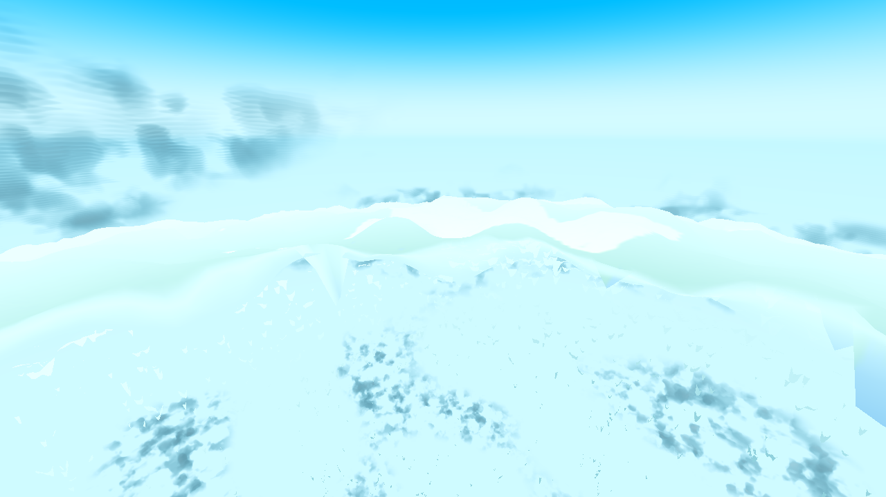
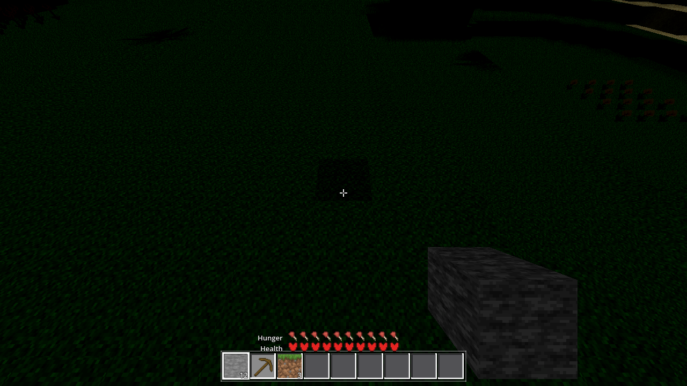
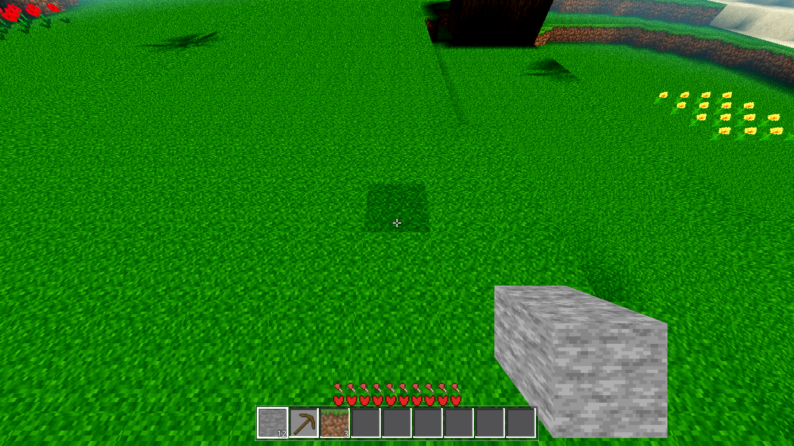
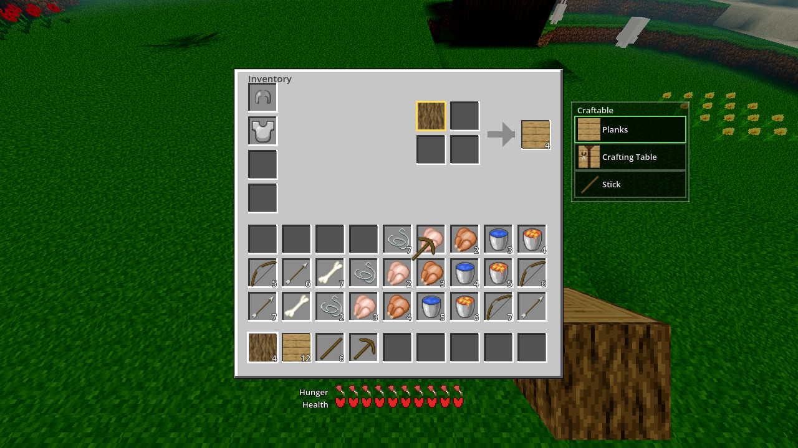
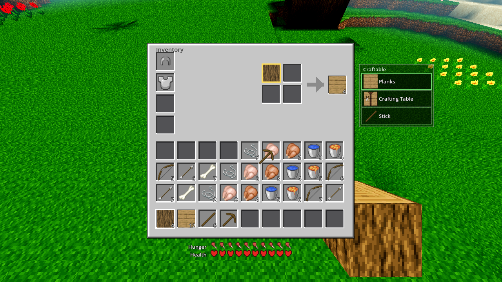
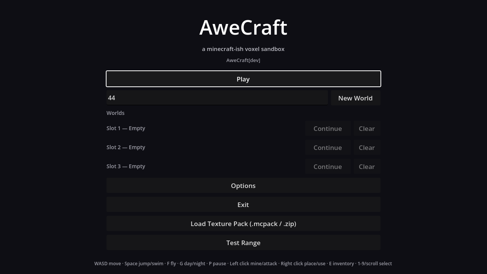
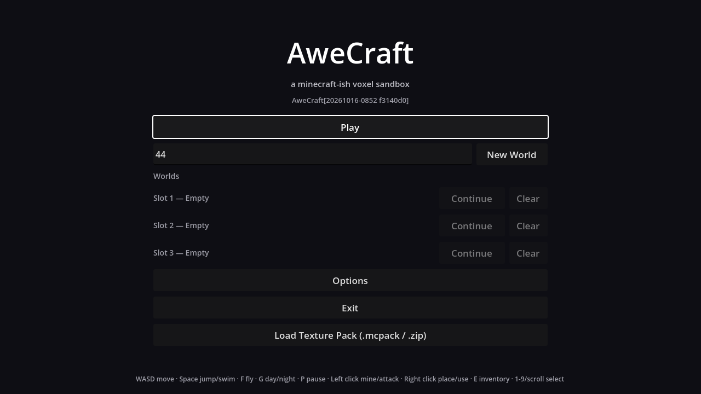
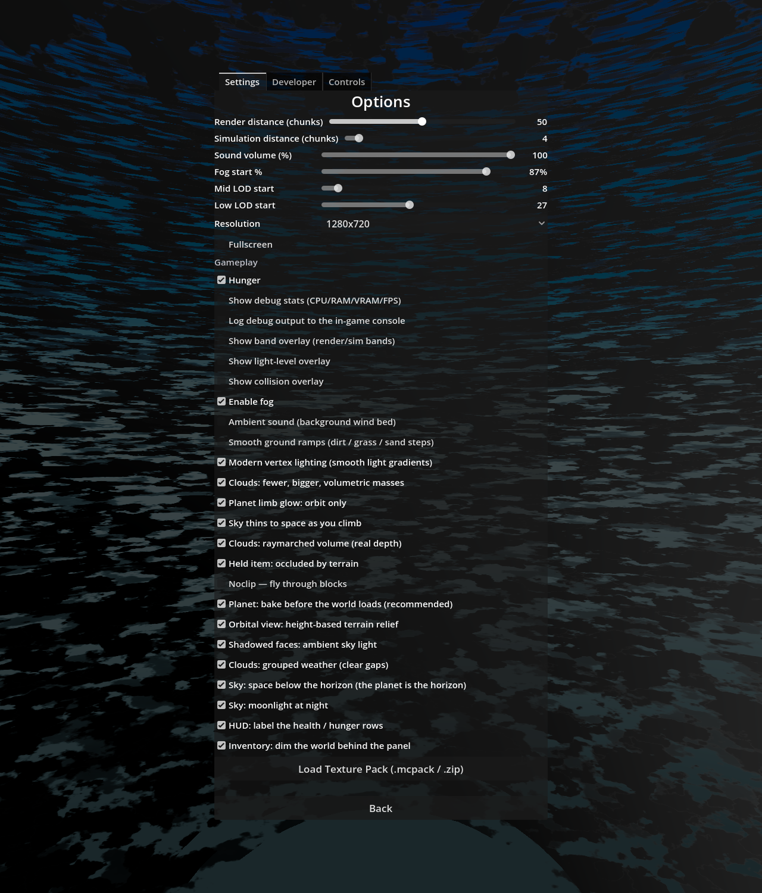

Date: 2026-10-16 · Scope: the four whole-experience findings (AC-0384 §29), in the existing visual language — polish, not redesign. All look changes ship behind a switch defaulting ON (the AC-0435/AC-0436 re-ruling: the shipped look is the user-reported defect, so the fix ships in and OFF is the A/B); the crosshair is the ticket's stated exception — a missing feature, simply corrected, no switch. Verdict: all four findings fixed; the menu gate's root cause answered (no gate existed — the button was unconditional, and the only dev/shipped mechanism in the tree is the build stamp, which covers the version string only); light gates green; generation byte-identical.
scenes/menu.tscn declared
RangeButton unconditionally, and the tree has zero is_debug_build() usages. The only
dev/shipped mechanism anywhere on the shipping path is build_windows.sh's pre-export rewrite of
build_id.gd (sed of const ID := "dev" → "<stamp> <sha>", restored
via its git checkout exit trap) — and that mechanism rewrites the version string only
(AC-0248). Nothing ever consulted “is this a shipped artifact” before drawing a menu entry. The assessment's
menu frame is therefore dev-provenance: the [dev] tag there is AweCraft[Build.ID]
rendered from a dev tree — it can never leak into a stamped build, where the same label renders the stamp.
The fix reuses the project's single source of truth for “shipped artifact”:
menu.gd _ready now hides RangeButton when Build.ID != "dev". Nothing is deleted —
dev / local-tree runs and the harness (ID "dev") keep the entry; a stamped export loses it. The
demonstration is the two menu frames below, the second taken with build_windows.sh's exact sed applied
temporarily and then reverted.A pixel plus in the HUD's own language: 6 px arms, 2 px thick, white 0.92 with the 1 px dark outline the slot
borders and labels use, arms stopped 1 px short of the centre so the aimed block reads through the middle.
CrossCtl in ui/inventory.gd; visible in play exactly while the pointer is not the visible
cursor (play runs MOUSE_MODE_CAPTURED — Player.start captures it — or HIDDEN for
joypad / click-to-toggle), hidden on the death screen and while the panel is open. Measured: 44 near-white px at
screen centre in both frames, centre pixel dark (the 1 px gap), 1 px outline legible over grass by day and over
space by night.

BEFORE — the assessment's own AC-0384 r24 ground-day frame: no crosshair anywhere (the finding: “no crosshair anywhere in the code”).
AFTER — night (TIME 0.0): the same plus over the darkened terrain — the interface is legible in the night the assessment found too dark for it.MOUSE_MODE_HIDDEN, but play runs MOUSE_MODE_CAPTURED (Player.start) — the
crosshair never appeared in the frames (0 white px at centre). The condition is now
Input.mouse_mode != MOUSE_MODE_VISIBLE: shown in CAPTURED and HIDDEN alike, hidden whenever the cursor
is back (menu, pause, console, inventory drag). The day/night frames above are the post-fix capture.Two rows of ten identical red pixel icons at identical size and seat carry no hierarchy. What differs between
them is what they measure — so they are named: a “Health” caption beside the heart row (the primary stat,
bottom row) and a “Hunger” caption beside the food row (above it), right-aligned a fixed gap from the row's first
icon, in the RecipeRow label language (font 13, white 0.95, black outline 3). Behind
stat_captions (default ON; AWECRAFT_STATCAP=0 boots the exact pre-AC-0437 HUD without
save). Measured: the row band gains 169 near-white px (332 vs 163) with the red icon count byte-identical
(1560 both) — the captions are additive; the icons did not move.

BEFORE —AWECRAFT_STATCAP=0, same tree and scene: the two identical rows, indistinguishable at a glance (the reported look).Opening the inventory now dims the world behind the panel: a 0.45-alpha black ColorRect as the
first child of the HUD layer (the death screen's _dead_bg at 0.72 is the precedent), so the
world below the layer recedes while the panel, the craftable list, the rows and the held-cursor item stay bright.
Behind inventory_dim (default ON; AWECRAFT_INVDIM=0 = the exact pre-AC-0437 look).
Measured on the same scene: world-band mean luminance 51.5 (dimmed) vs 93.6 (undimmed) — exactly
×0.55, the 0.45-alpha contract; sky band 50.0 vs 84.9.

AFTER — default ON: the terrain behind the panel recedes; the panel and its contents hold their brightness.
BEFORE —AWECRAFT_INVDIM=0: the world at full brightness competing with the panel (the reported look).Same scene, two provenances: the dev tree (Build.ID = "dev") keeps the [dev] tag and the
Test Range entry; a stamped build (ID "20261016-0852 f3140d0", applied with build_windows.sh's
exact sed, then reverted) renders the stamp in the tag and drops the entry — and, because the VBox re-packs, the
footer help line rises into its place.

DEV —RESULT {"build":"dev",…}: the tag reads AweCraft[dev] and Test Range sits below Load Texture Pack (this is the assessment's frame, in provenance).
STAMPED —RESULT {"build":"20261016-0852 f3140d0",…}: the tag renders the stamp, the Test Range entry is gone, nothing else moved.menu.gd _ready — if Build.ID != "dev": RangeButton.visible = false
Both rows at the foot of the Settings tab, both checked (default ON), in the code-created CheckBox
pattern (hi + 22 / hi + 23 move_child seats after the moonlight row), each with
a _sync_controls line and a _on_*_toggled handler. The Settings arm's
rows_21 Controls-tab count is unaffected (the rows sit on the Settings tab).
| Gate | Run | Exit | Errors | Reading |
|---|---|---|---|---|
| G0 | timeout 300 godot --headless --path godot --quit (final tree state, after the crosshair fix; re-run after the fix as well) | 0 | 0 / 0 | gate_census.py ok; process exit status checked (the stochastic-UAF trap — a clean log with signal-11) both times |
| SMOKE | AWECRAFT_BATTERY=player;interact;light;fluids;genhash headless | 0 | 0 / 0 | ok:true — all five modes at standing values |
| genhash | standalone AWECRAFT_LOGIC=genhash, diffed against .scratch/AC-0311-gates/p2_genhash_r1.log (the documented current-tree reference) | 0 | 0 / 0 | 25/25 byte-identical — nothing in this ticket touches generation |
| settings | AWECRAFT_LOGIC=settings headless | 0 | 0 / 0 | ok:true; rows_21 (Controls tab) unchanged. The arm is a fixed per-setting conjunction and is not extended per UI switch (the AC-0435/0436 pattern); the two new keys are proven live by the A/B frames — AWECRAFT_STATCAP=0 / AWECRAFT_INVDIM=0 change the render without touching the cfg |
| held-item probe | AWECRAFT_LOGIC=held (1280×720, xvfb/Vulkan llvmpipe Forward+) + sibling AWECRAFT_LOGIC=toolpose | 0 | 0 / 0 | toolpose ok:true (depth contract green: {box,fist,sprite,tool: true}, scale 0.33/0.33). The held arm's RESULT reads box_ok:false (tint_top_ok), cross_ok:false (empty cross_18), depth_ok:false (tool:false) — proven pre-existing, not this ticket's: byte-identical RESULT with my changes stashed out, and byte-identical on a clean-HEAD archive (f3140d0 + libchunkio.so + the untracked .uid files + an --import pass). box_ok was already filed as a pre-existing data-side red by AC-0435 (last green gate reading 08-24); the tool/cross fields have no recorded standing value (the arm's §1 table row is AC-0066-era and stale) while the toolpose arm proves the same depth contract green — the held arm's reds are its own fixture/timing state. Recorded, not absorbed — the coordinator's heavy set owns the arm. |
| shaderforce | N/A — no .gdshader changed (the whole ticket is UI-layer + menu gate + two settings; no material, no uniform, no lighting path). Stated rather than run. | |||
| File | Change |
|---|---|
godot/ui/inventory.gd | CrossCtl (the pixel-plus crosshair, 18×18, screen-centre per frame); _health_cap/_hunger_cap captions + _mk_stat_caption (placed in _update_survival, hidden with the rows when p == null); _dim_bg (0.45-alpha, first child of the layer); AWECRAFT_STATCAP/AWECRAFT_INVDIM boot preloads into Settings.values WITHOUT save at the top of _ready; both switches read live every frame in _process/_update_survival — no apply step; crosshair visibility = play + pointer not visible (CAPTURED/HIDDEN) + panel closed + alive |
godot/autoload/settings.gd | DEFAULTS: "stat_captions": true, "inventory_dim": true (after moonlight, with the re-ruling rationale); _clamp: both arms → AnalogTune.sanitize_bool (a hand-edited string in the cfg fails to the default, never throws) |
godot/ui/menu.gd | the gate: _ready first statement — if Build.ID != "dev": …RangeButton.visible = false (with the finding rationale); two code-created CheckBox rows (StatCapCheck/InvDimCheck, hi + 22/hi + 23), _sync_controls lines, _on_stat_cap_toggled/_on_inv_dim_toggled |
godot/ARCHITECTURE.md | §2 Settings row (the two switches, env preloads in ui/inventory.gd _ready, live read, no apply step); §3 tree: ui/inventory.gd line (crosshair now real, captions, dim) and the Menu line (the Build.ID gate) |
godot/HARNESS.md | §2 env table: AWECRAFT_STATCAP=0|1 and AWECRAFT_INVDIM=0|1 rows (the AWECRAFT_AMBSKY pattern, boot-only preload WITHOUT save, live read) |
tasks/AC-0437/ | this page; plan.html; continuity.md; captures/ (9 frames below + the recipe's _placed.png byproducts) |
captures/: ac0437-crosshair-before.png (the assessment's r24 day frame — the true pre-AC-0437 look),
ac0437-play-day.png, ac0437-play-night.png, ac0437-statcap-before.png,
ac0437-inv-open.png, ac0437-inv-open-nodim.png, ac0437-menu-dev.png,
ac0437-menu-stamped.png, ac0437-menu-options.png. All 1280×720 except the options view
(1280×1500, the Settings list is taller than the viewport). Rendered on the llvmpipe Forward+ proxy (geometry/layout/UI evidence only);
every render run carried the Vulkan … Forward+ … llvmpipe boot line, exit 0, 0 SCRIPT / 0 SHADER errors.
godot/core/build_id.gd was temporarily stamped for the menu-stamped frame with the build script's exact
sed and reverted to "dev" immediately after (it is clean at HEAD; the build script's own exit trap does the same restore).
| Item | Why not |
|---|---|
The menu's flat-black Bg | Not in the acceptance set — the assessment named exactly the [dev] tag and the Test Range entry as developer scaffolding. The flat background is judged product-shaped (the game's menus are dark-on-dark by design); changing it would be redesign, not polish. |
| The Developer options tab + the debug checkboxes (debug stats, overlays, noclip…) | Same boundary: the assessment's menu complaint is the two scaffolding items, and the Developer tab is explicitly a developer destination. Gating it wholesale would hide legitimate dev tools from the harness; the ticket asks to hide what a player should not see, in the shipped path. |
Deleting RangeButton from menu.tscn | The ticket says hide/gate, not delete: dev runs and the harness need the entry; the gate reuses the build stamp so there is exactly one source of truth for “shipped”. |
Any new harness arm or harness.gd change | Fenced pristine; the two look switches follow the AC-0435/0436 pattern (frames + env A/B, not arm extension), and the menu gate is demonstrated by the two menu shots with RESULT {"build": …} as the provenance assertion. |
Rebasing the held arm's stale fields | Recorded above with the pre-existing proof chain; the arm's standing values are the coordinator's heavy set to own (AC-0435 filed the box_ok half the same way). |
Fence respected: scenes/main.gd, autoload/game.gd, entities/drop.gd,
autoload/debug.gd untouched (the other session's uncommitted work — the AC-0038 particle pool, the
AC-0396 snap loud-fail, the controls dispatch — stayed in place the whole run; the clean-HEAD archive run is what
isolated tree state from those hunks). No tasks/TASKS.yaml mutation (status change is the
coordinator's at closeout). No commits by this ticket. tasks/AC-0067/held_*.png are unmodified by this
run (the wallshot PNG writers belong to the AWECRAFT_WALL_SHOTS-gated _wallshot_test arm,
not the _held_test probe run here; those PNGs carry another session's Oct 3 modification).